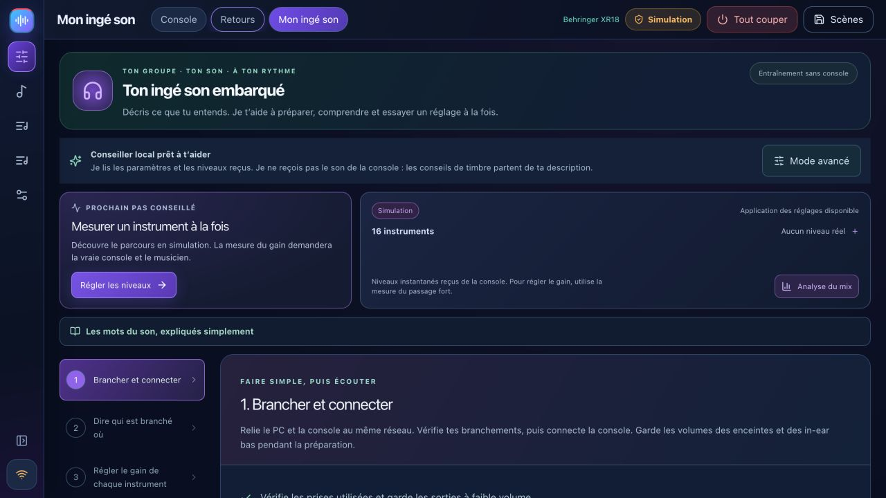
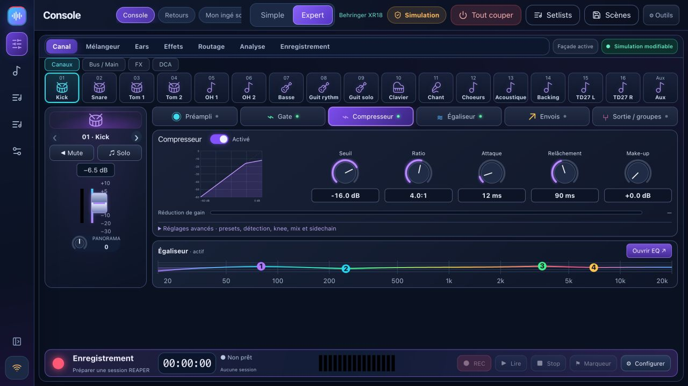
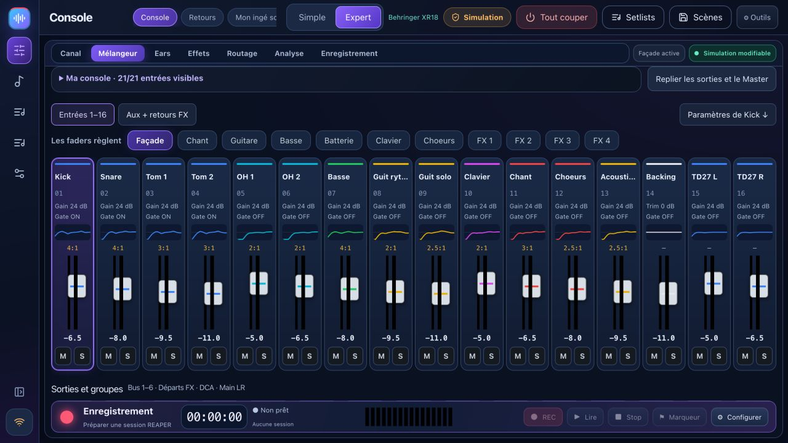
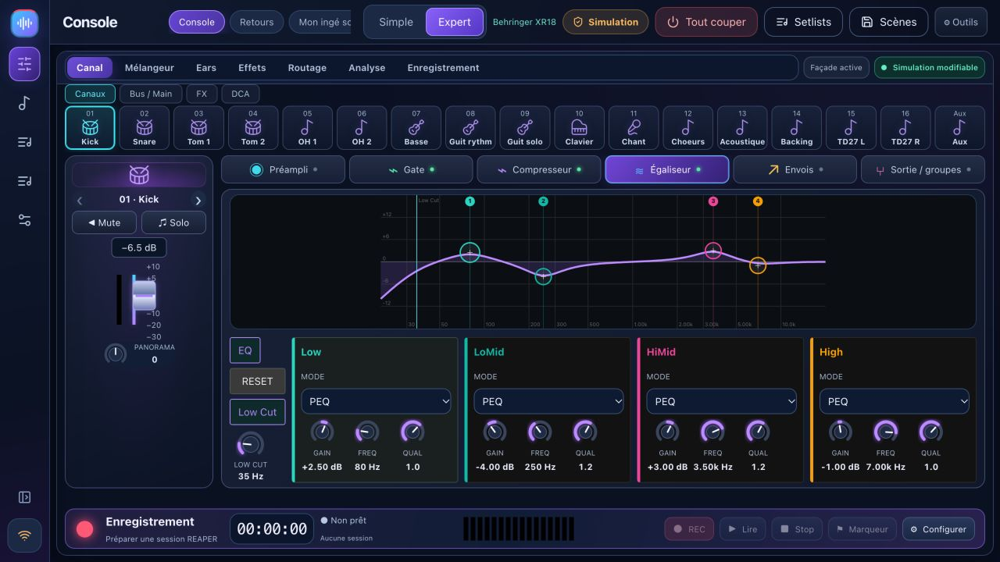
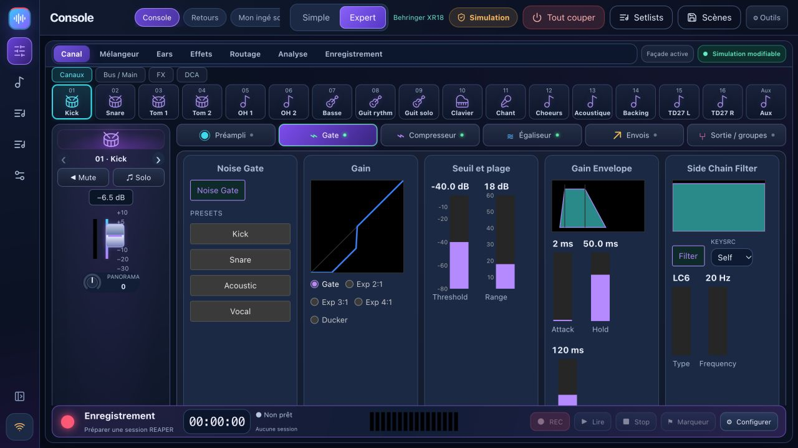
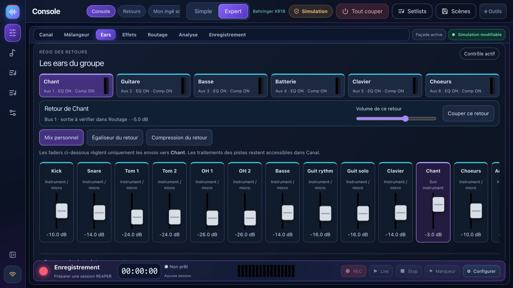
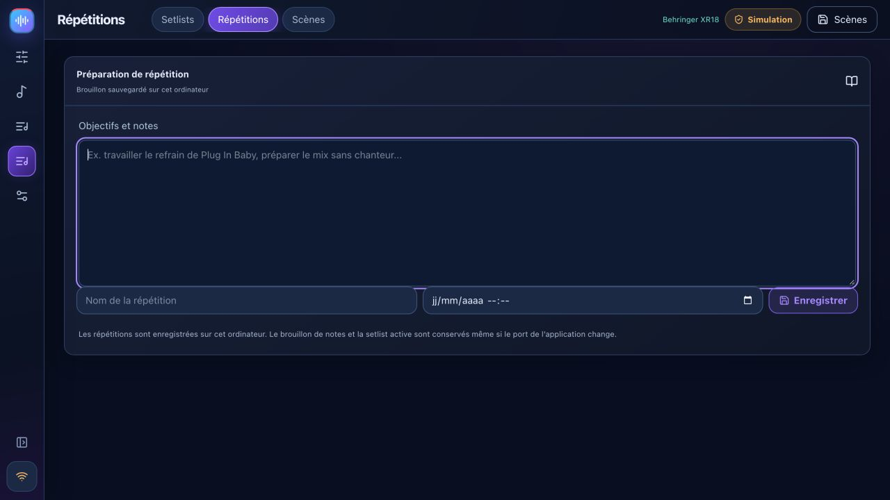
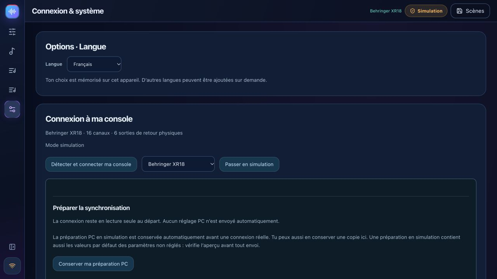

Mon ingé son
Six étapes : connecter, préparer les instruments, mesurer les gains, corriger, préparer les retours et sauvegarder. Le coach lit les mesures ; il ne reçoit pas ton audio.
Prépare la balance, garde la console sous les yeux, donne son retour à chaque musicien et répète avec tes morceaux. Gratuit, local, et pensé pour les groupes.
XR18 / X18 · MR18 · XR12 / MR12 · X32 partielle — limites et validations ci-dessous.

Associe une scène complète et des notes à chaque groupe, puis vérifie les différences avant le rappel sur la console. Depuis son téléphone, chaque musicien peut vérifier son bus et le signal d’une source, puis rappeler son dernier mix. L’Atelier du son propose une comparaison A/B du kick et de la basse. Le diagnostic de connexion distingue réseau, contrôle et pont REAPER.
Les cartes musiciens, la liste de câblage et le plan imprimable reprennent les entrées et retours du groupe.
NouveautésDes ambiances adaptées aux chœurs et aux instruments, à doser par retour. Essaie puis garde ou annule. L’Atelier du son ajoute les comparaisons A/B et les conseils sur un extrait REAPER.
Lire les nouveautésFrançais · English · Italiano · Español · Deutsch
Change de langue dans Réglages → Options · Langue, sans redémarrer. Les menus, commandes, aides et confirmations suivent ton choix. Chaque musicien peut aussi choisir sa langue sur son téléphone.
La préférence est mémorisée sur cet appareil ; tes noms de morceaux, de scènes et de musiciens restent les tiens. D’autres langues peuvent être ajoutées suivant la demande. Demander une langue
Le design actuel de BandPilot 2.2.4 : tranches colorées, traitements et retours accessibles. Clique sur une capture pour l’agrandir.




Ma console mémorise les tranches visibles, leur largeur et le panneau de sorties selon le modèle et la taille d’écran. La nouvelle régie réunit le mix, l’EQ et la compression de chaque musicien.
Le correctif REAPER 1.2.3 protège les échanges pendant REC, y compris les conflits entre instances et les verrouillages temporaires de fichiers.
Découvrir les nouveautés 2.2.2 →Les fonctions avancées dépendent des capacités de la console. La matrice décrit ce qui est disponible et ce qui reste expérimental.

Six étapes : connecter, préparer les instruments, mesurer les gains, corriger, préparer les retours et sauvegarder. Le coach lit les mesures ; il ne reçoit pas ton audio.
Menu compact, banques de tranches, façade, bus, DCA et traitements de canal. Préampli, gate, compression, égaliseur, envois, effets et routage selon le modèle.
Un lien QR par musicien, uniquement son bus. Faders, mute, profils sauvegardés et niveaux plafonnés. Autorisations actualisées sans recharger le téléphone.
Avec les morceaux ou en groupe seul : sections, prises, formes d’onde, présence, écoute de l’original, boucle et marqueurs. Pont REAPER 1.2.3 requis.
Préparer une session, choisir les pistes, enregistrer en WAV 24 bits et vérifier le transport. USB multipiste disponible sur XR18/MR18/X18 ; XR12/MR12 : USB stéréo sur clé.

Répertoire, setlists, répétitions et notes persistantes sur l’ordinateur. Transport de concert, sections et fins de morceaux avec REAPER/ReaCue configurés.
Capturer la console, exporter/importer le JSON, prévisualiser les changements et garder une sauvegarde avant rappel. Le 48 V reste exclu du rappel guidé par défaut.
Niveaux et spectre X-Air, conseils A/B, comptes facultatifs et journal de diagnostic. IA connectée facultative avec clé personnelle ; ReaCue et scènes natives ont leurs limites propres.

La simulation permet de préparer l’interface et les réglages. Aucun niveau audio fictif n’est présenté comme une mesure réelle. REAPER reste un logiciel audio réel.
La détection lit l’identité de la console sur le réseau local. Le nom, la marque et les contrôles s’adaptent ; un modèle inconnu est refusé. Une connexion démarre en lecture seule.
| Modèle | Capacités | État dans cette version |
|---|---|---|
| Behringer XR18 / X18 | 16 tranches mono + Aux stéréo · 6 Aux · USB 18×18 | Famille principale. Essais matériels réalisés sur XR18 ; X18 reste à confirmer. |
| Midas MR18 | 16 tranches mono + Aux stéréo · 6 Aux · USB 18×18 | Profil et protocole testés en simulation ; validation physique restante. |
| Behringer XR12 / Midas MR12 | 12 entrées · 4 préamplis micro · 2 Aux physiques | Interface et limites adaptées. USB stéréo sur clé, pas d’USB multipiste PC. Validation physique restante. |
| Behringer X32 / Rack / Compact / Producer / Core | 32 canaux · 16 bus · 8 DCA · 6 matrices | EXPÉRIMENTAL ET PARTIEL : mixage, EQ, dynamique principale et envois. Préamplis, routage, FX, vumètres, scènes et USB complets non disponibles. |
Montage des captures BandPilot 2.2 en simulation, sans son ni démonstration de commande matérielle. Les chapitres et leur transcription sont disponibles avec la vidéo.
Choisir le bon installateur, explorer la simulation, connecter la console en lecture seule puis préparer une sauvegarde.
Guide complet →Six étapes expliquées, mesures réelles, propositions à vérifier, retours puis scène de sauvegarde.
Mon ingé son pas à pas →Installer le pont 1.2.3, ouvrir le projet, vérifier les pistes armées, choisir les prises et boucler une section.
REAPER →Les installateurs sont publiés ensemble après les tests et les contrôles de démarrage Windows, macOS et Linux. Vérifie le numéro de version sur la page des téléchargements.
BandPilot est le nouveau nom de XR18 Studio. Sauvegarde les scènes avant mise à jour ; les identifiants de données historiques sont conservés.
Oui, BandPilot est gratuit et open source sous licence MIT. REAPER est un logiciel séparé avec sa propre licence.
Non. Les fonctions dépendent du modèle et de leur validation. La X32 est partielle et expérimentale. Consulte la matrice avant une utilisation sur scène.
Non : il lit les réglages, niveaux et mesures disponibles de la console. Les conseils d’écoute partent de ta description et restent à vérifier à l’oreille.
Le contrôle local fonctionne sans Internet ni compte. Ordinateur, console et téléphones doivent partager le réseau local. L’IA connectée facultative demande Internet et une clé personnelle.
BandPilot est son nouveau nom. Le dépôt et les anciens identifiants techniques restent conservés pour préserver l’historique et les données. Sauvegarde tes scènes avant la mise à jour.